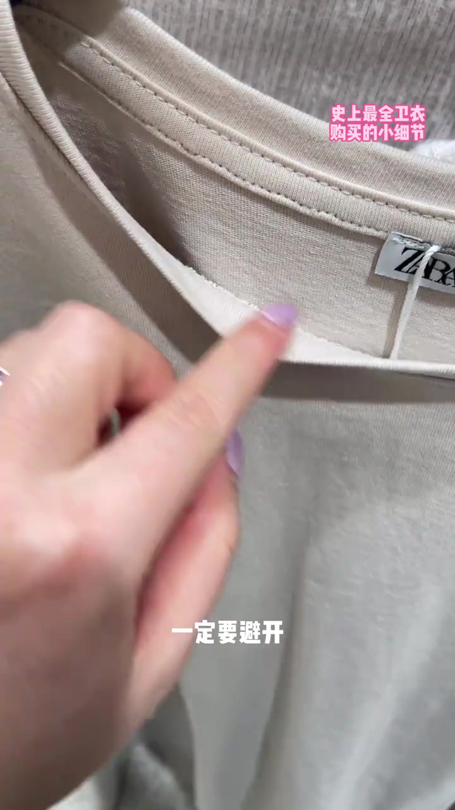
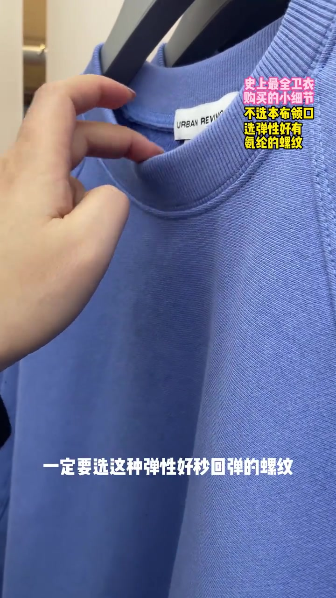
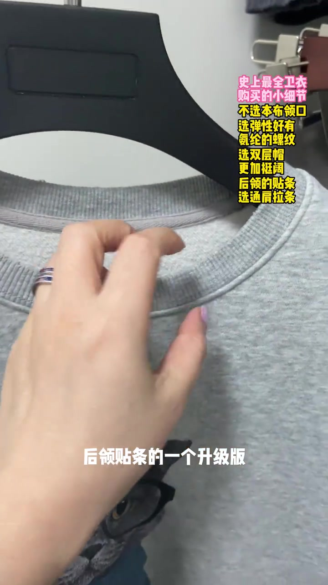
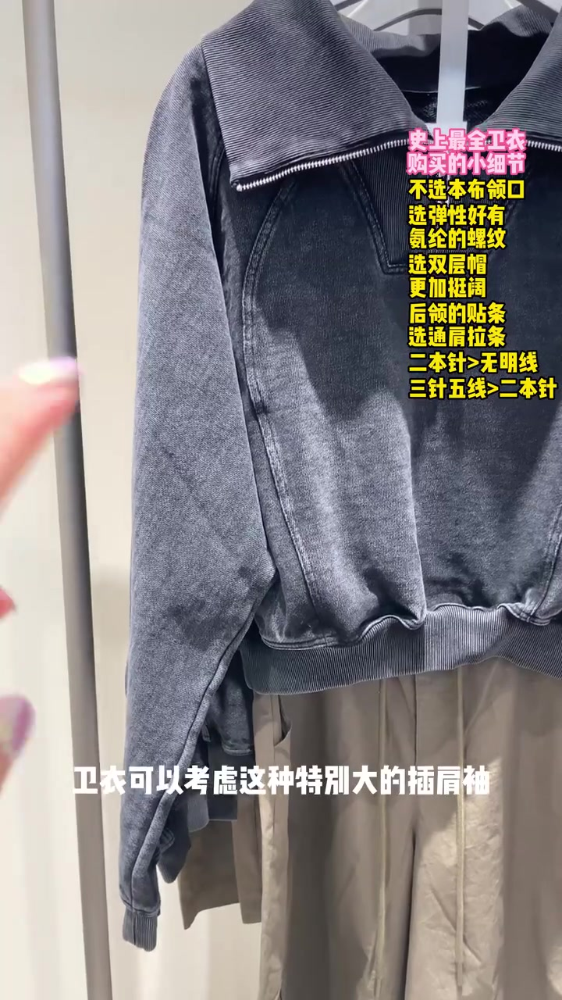
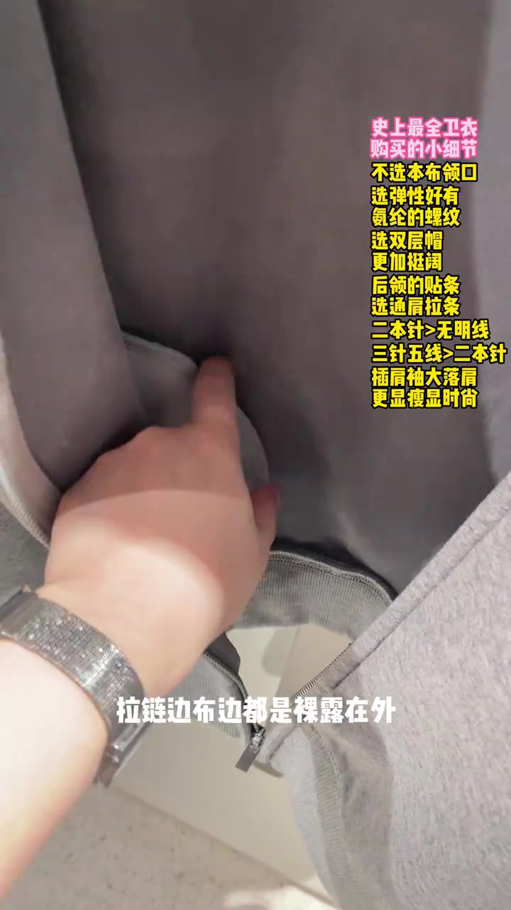
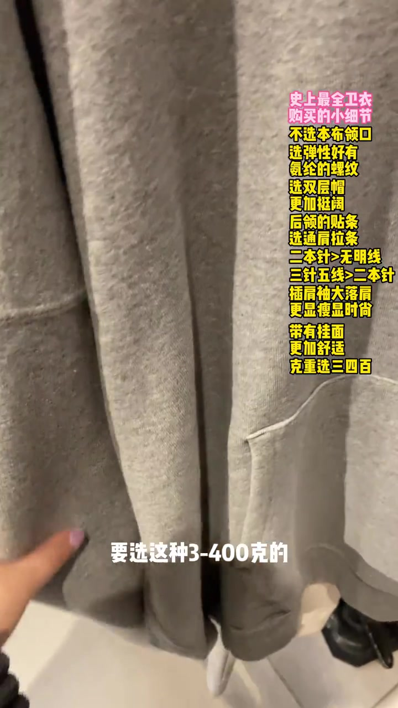
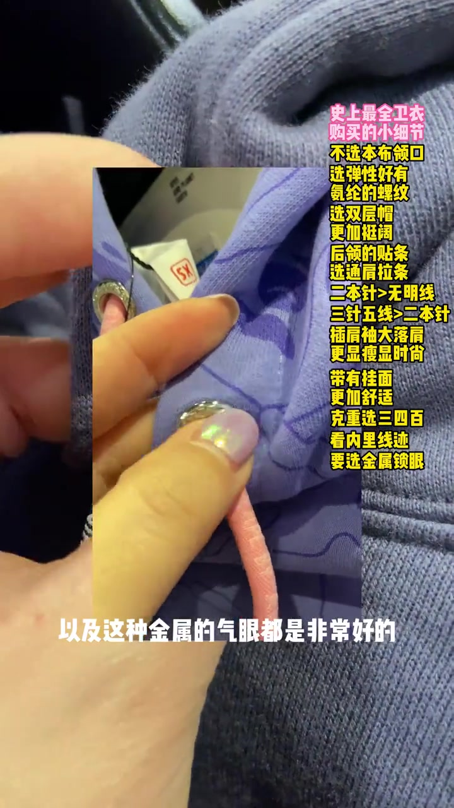

01
中文
本布领口会变形。
EN
Self-fabric collars stretch out.
表达提示self-fabric（本布）

Scene English · 服装 · 选购细节
The Complete Hoodie Buying Guide
🎧 语音讲解
Opening: The Collar Deforms
情境领口用 T恤或卫衣料子直接做的本布领，穿两次回去之后肯定会变形，要避开。
本布领口会变形。
Self-fabric collars stretch out.
表达提示self-fabric（本布）
穿两次就变形。
They warp after a couple of wears.
表达提示deform（变形）
用self-fabric换一种说法
用deform换一种说法

Ribbing Should Snap Back
情境全棉又稀松的螺纹不能选，要选弹性好、秒回弹、氨纶成分多的螺纹。
螺纹要弹性好。
Choose stretchy ribbing.
表达提示ribbing（螺纹）
氨纶多回弹快。
More spandex snaps back fast.
表达提示spandex（氨纶）
用ribbing换一种说法
用spandex换一种说法
Double-Layer Hoods
情境单层帽软啪啪的缝缝都在外，双层帽更加立体挺阔，毛边都在内部，看着干净利索。
单层帽软趴趴。
Single-layer hoods go limp.
表达提示limp（软趴趴的）
双层帽立体挺阔。
Double layers stand up better.
表达提示structured（挺阔的）
用limp换一种说法
用structured换一种说法

The Back Neck Tape
情境后领的领贴条是好的卫衣T恤必不可少的，既能遮住做工，主要作用是固定领形。
领贴条必不可少。
Neck tape is a must.
表达提示neck tape（领贴条）
它固定领形。
It holds the collar's shape.
表达提示fix the shape（固定领形）
用neck tape换一种说法
用fix the shape换一种说法

Shoulder-to-Shoulder Tape
情境通肩拉条是领贴条的升级版，从领贴一直延伸到两侧肩上，固定效果最好。
通肩拉条是升级版。
Full-width tape is the upgrade.
表达提示upgrade（升级）
延伸到肩上固定更好。
Extending to the shoulders locks it down.
表达提示extend（延伸）
用upgrade换一种说法
用extend换一种说法

Raglan Sleeves Slim
情境特别大的插肩袖或落肩袖给人体加了一条分割线，所以会显瘦，休闲时尚感更强。
插肩袖多一条分割线。
Raglan adds a visual seam.
表达提示raglan（插肩）
分割线显瘦更休闲。
The seam slims and relaxes the look.
表达提示slim（显瘦）
用raglan换一种说法
用slim换一种说法

Facings and Fabric Weight
情境敞开穿的卫衣要选带挂面的，里面看不到作风毛缝；克重选三到四百克，不易皱有挺阔感。
带挂面才利落。
Facings make the inside tidy.
表达提示facing（挂面）
三百到四百克最合适。
300-400 grams is the sweet spot.
表达提示fabric weight（克重）
用facing换一种说法
用fabric weight换一种说法

Eyelets and Drawstrings
情境衣字眼最基础常见，菊花眼和金属气眼都很好；帽舌选有螺丝加固的精致调节。
菊花眼金属眼更好。
Riveted and metal eyelets are better.
表达提示eyelet（扣眼）
帽绳选精致调节扣。
Choose a nice cord stopper.
表达提示drawstring（帽绳）
用eyelet换一种说法
用drawstring换一种说法
本布领口会变形。
螺纹要弹性好。
领贴条必不可少。
三百到四百克最合适。
本布领穿两次就变形
回弹性决定变形程度
单层帽软趴无型
太重显胖太轻贴身